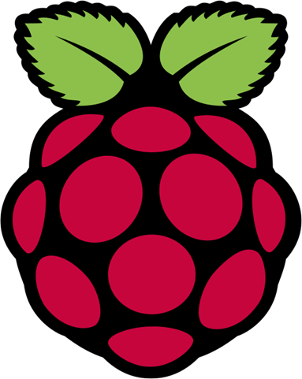

Le Rapsberry Pi est un micro-ordinateur de la taille d'une carte de credit concu en Angleterre par David Braden dans le cadre de la fondation : The Raspberry Pi foundaiton.
sorti en 2012, le raspberry Pi premère génération fut un succès mondial et fut très apprécié des passionés d'information dépassant les 5 millions d'unités en seulement 3 ans sur le marche.
